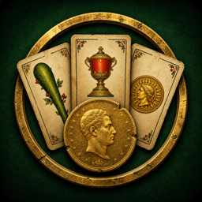
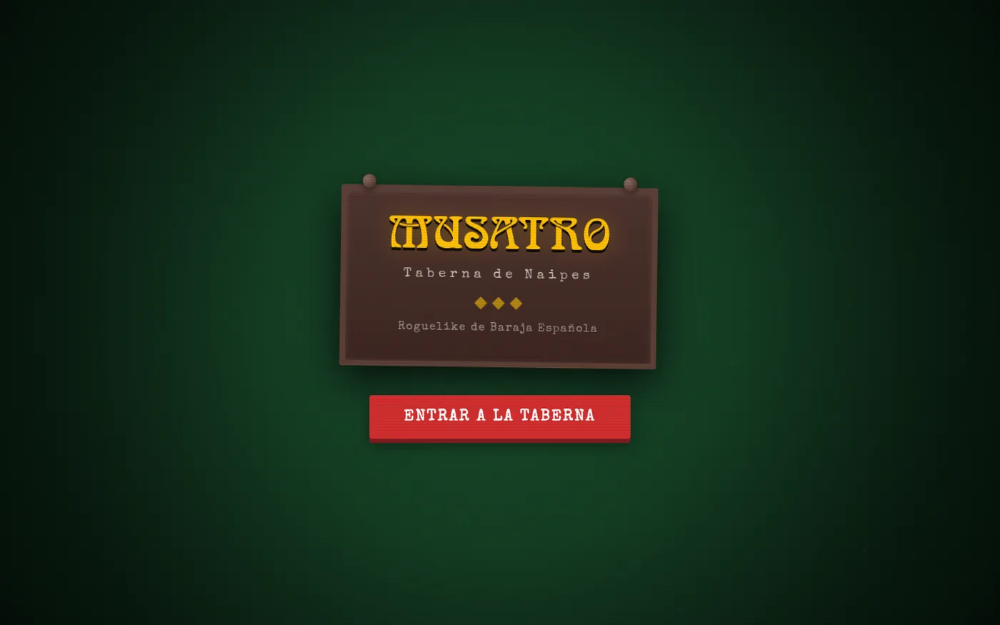
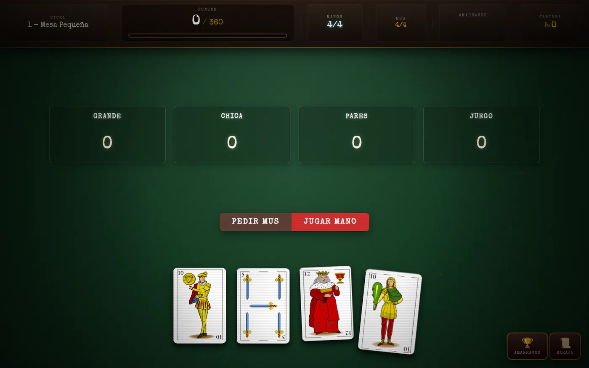
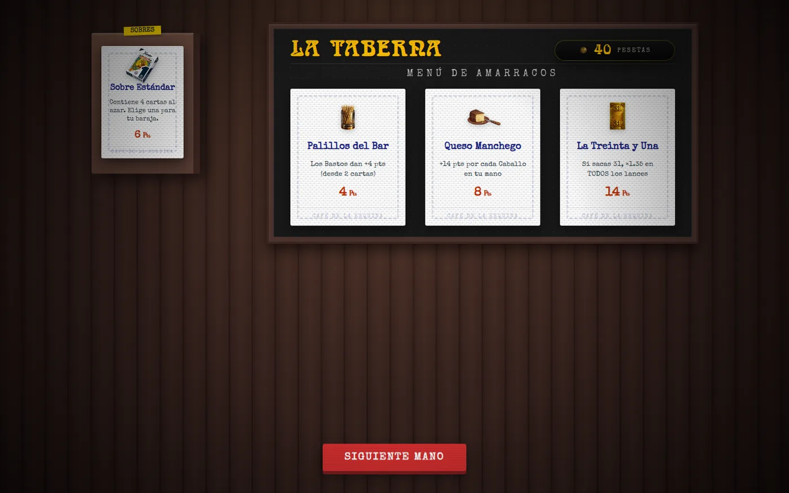
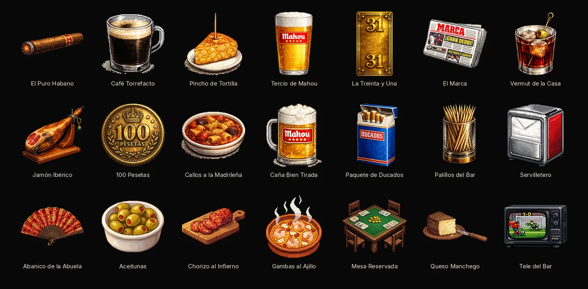

Musatro

Musatro is an unfinished browser roguelike built around the four Mus lances of Grande, Chica, Pares, and Juego. It uses a Spanish deck, but the run structure borrows more from Balatro than from a rules-faithful Mus simulator.
A full run is playable in the browser. I stopped mid-build. The `dorada` and `holográfica` card editions exist in the type system but do not affect scoring yet.
What is playable
- Play all four Mus lances with pass, envido, envido x2, and órdago actions.
- Work through eight antes. Each ante has a small table, a big table, and a boss.
- Visit the tavern between tables to choose items and packs.
- Reorder items to change how their effects combine.
- Keep progress in
`localStorage`across browser sessions.
There are 21 items and 10 bosses. The 3 counts as a King, and the 2 counts as an Ace. A winning run reaches Ante 8.
How it was built
The game uses strict TypeScript without a framework. `Game` owns the run state. The interface uses the DOM and CSS. Vitest covers scoring, envite, and item order, but not the rendered pixels.
Each lance scores the base hand, ordered items, envite, and boss effect in that order. Color and mus bonuses apply after all four lances.
Hosted on Cloudflare Pages at musatro.felipebasurto.com. MIT.
Tavern names such as Mahou and Ducados are bar-culture references, not sponsorships.
Screenshots
These screenshots show the title screen, a hand in play, the tavern, and all 21 items.



